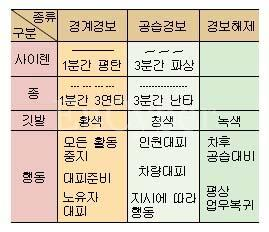

[경보 종류와 신호 방법]
훌륭한 경보 체계를 갖고 있더라도 사람들이 알지 못하면 아무 소용이 없다.
다음은 메모리관련 오류를 디버깅하기 위해 Visual C++ 이 제공하는 메모리 상태값들이다.
0xcccccccc -> 지역변수. 초기화되지 않음.
0xcdcdcdcd -> 힙에 할당된 메모리. 초기화되지 않음.
0xdddddddd or 0xfeeefeee -> 힙에서 free된 메모리.
0xfdfdfdfd -> 힙에 할당된 메모리의 초과범위(할당된 메모리의 양쪽 끝)
0xcdcdcdcd -> 힙에 할당된 메모리. 초기화되지 않음.
0xdddddddd or 0xfeeefeee -> 힙에서 free된 메모리.
0xfdfdfdfd -> 힙에 할당된 메모리의 초과범위(할당된 메모리의 양쪽 끝)
이 값들은 디버그 모드로 동작할 때에만 설정된다.
확실히 기억해서 공습에 대비하자.